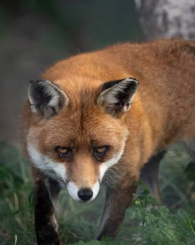
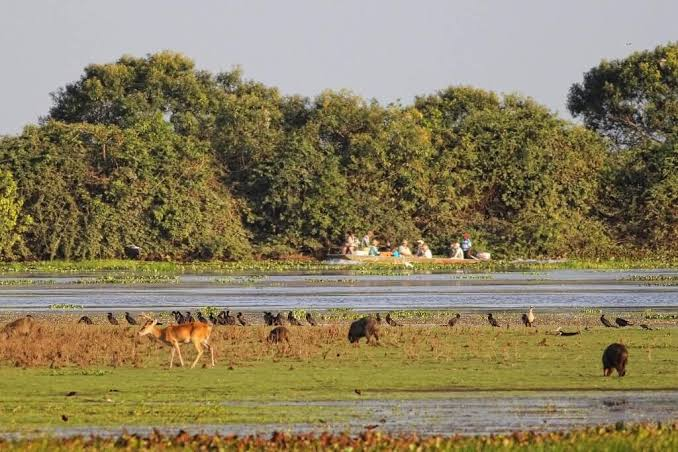
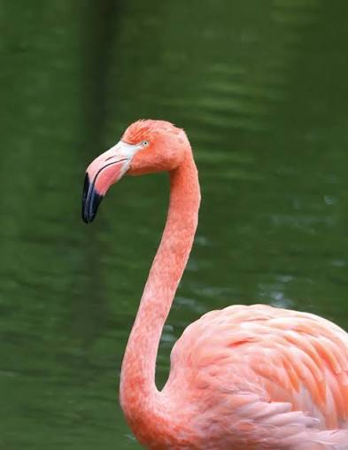
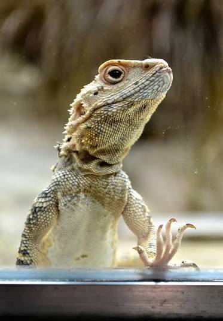
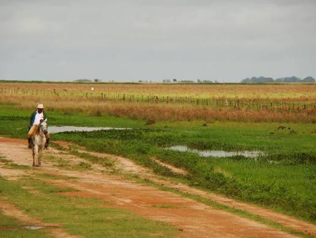
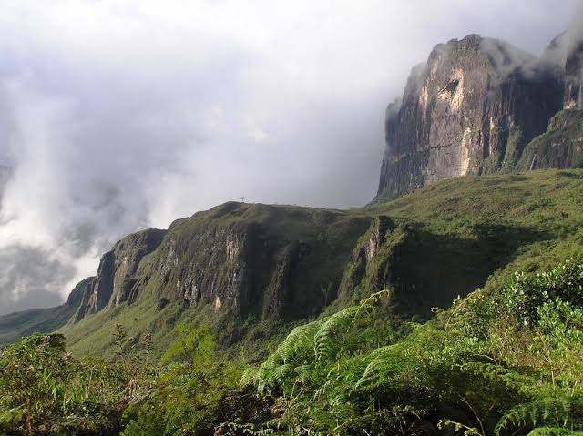
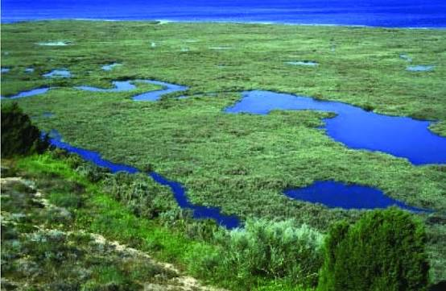
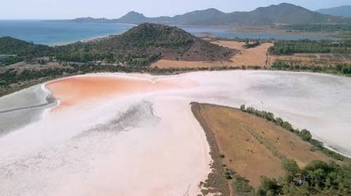
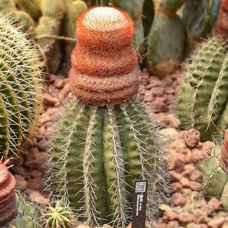
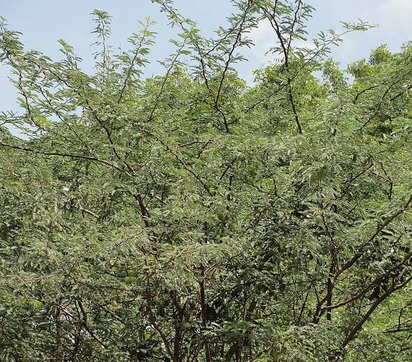

Mammals
The crab-eating fox is a wild canine native to South America. It lives in habitats such as forests, grasslands and wetlands. Its diet includes crabs, insects, small animals and fruit.
Protecting Nature, Preserving Life.
Explore natural landscapes, discover wildlife and experience the beauty of nature.
Explore WildlifeDiscover the incredible wildlife, natural habitats and beautiful landscapes of Amuay Wildlife Park.
Amuay Wildlife Park is a nature reserve located 350 km west of Venezuela's capital. Covering an area of 72 km², the park contains a variety of natural landscapes, including grasslands, hills and marshes. These environments support a wide range of animal and plant life, making the reserve an important natural area to explore and protect.
Total area of the nature reserve
West of Venezuela's capital
Grasslands, hills and marshes

Our mission is to protect and preserve the natural environment of Amuay Wildlife Park, safeguarding its flora and fauna for future generations. Through conservation, environmental awareness and responsible tourism, we aim to protect the park's unique habitats and encourage respect for nature.
Explore the different types of wildlife and natural habitats found within Amuay Wildlife Park.

The crab-eating fox is a wild canine native to South America. It lives in habitats such as forests, grasslands and wetlands. Its diet includes crabs, insects, small animals and fruit.

Flamingos are recognisable by their long legs, curved beaks and pink feathers. They are commonly found in shallow lakes, lagoons and wetlands, where they feed on algae and small aquatic organisms.

Lizards are reptiles found in a wide range of habitats, including grasslands, forests and wetlands. Many feed on insects and other small creatures, while some species also eat plants. They often use sunlight to regulate their body temperature.
Amuay Wildlife Park is home to a variety of natural landscapes, including grasslands, hills and marshes. Each habitat contributes to the park's natural beauty and provides an important environment for wildlife.

The park's grasslands feature open areas of natural vegetation, creating a distinctive landscape across the reserve.

The hills add variety to the park's landscape, providing elevated areas and views across the surrounding natural environment.

Marshes are wetland environments where water and vegetation create an important part of the park's natural landscape.
Select a habitat to discover more about its environment.
Click one of the buttons above to explore the park's habitats.
The Amuay region is part of the Paraguaná Peninsula, where plants have adapted to hot, dry conditions and areas with high salt levels. These environments support distinctive forms of regional vegetation.

The salinas are coastal salt-flat environments. Plants growing in these areas must tolerate salty soils and challenging environmental conditions.

The melon cactus (Melocactus) is adapted to hot, dry environments. Its thick structure helps it survive where rainfall is limited.

Cují Yaque (Prosopis juliflora) is a thorny tree that can tolerate dry conditions and limited water, making it suited to arid landscapes.
Amuay Wildlife Park offers visitors the opportunity to discover its natural landscapes and learn about the importance of protecting wildlife and the environment.
Covering an area of 72 km², the park includes grasslands, hills and marshes, providing a variety of natural environments to discover.
Ordinary vehicular traffic is prohibited within the park. Visitors can explore designated dirt tracks through scheduled tours.
Visitors are encouraged to respect the natural environment, avoid disturbing wildlife and help preserve the park's habitats for future generations.
Take our short quiz and see how much you know about wildlife and nature.
Amuay Wildlife Park is dedicated to protecting its natural landscapes, habitats, plants and wildlife.
Amuay Wildlife Park covers 72 km² of natural landscapes, including grasslands, hills and marshes. Protecting these environments is important for preserving the park's natural beauty and the habitats that support its plant and animal life. Ordinary vehicular traffic is prohibited to reduce disturbance and help protect the landscape.
Visitors are encouraged to respect the natural environment, stay on designated tracks and avoid disturbing wildlife. Responsible tourism helps ensure the park can be enjoyed and protected for future generations.
To protect the park's natural environment, ordinary vehicular traffic is prohibited, as outlined previously. Visitors can explore the reserve through scheduled tours that follow designated dirt tracks. These routes help protect the landscape, keep visitors safe and preserve the park's wildlife and plant life.